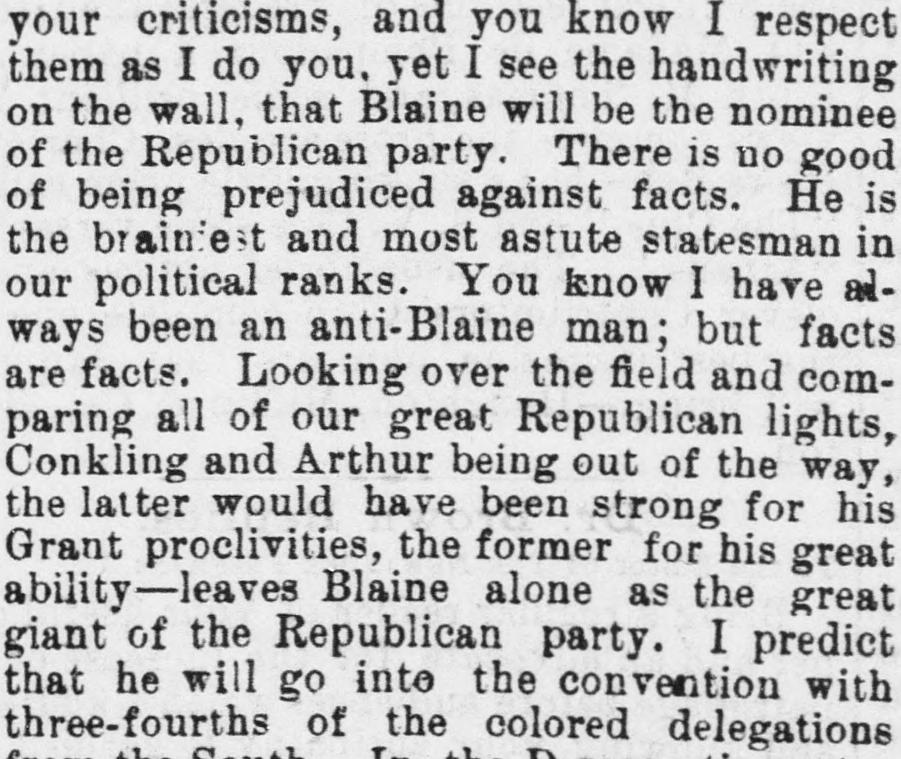
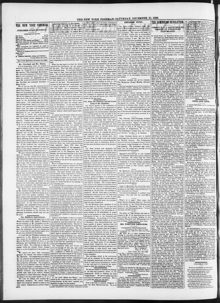

THE DOMINICAN REVOLUTION. CONSUL H. C. C. ASTWOOD’S ESTIMATE OF PRESIDENT CLEVELAND. He Thinks Blaine the Republican Giant—Cleveland Alone Can Stand against Him—Description of the Dominican Election and the Subsequent Revolution.LA REVOLUCIÓN DOMINICANA. ESTIMACIÓN QUE EL CÓNSUL H. C. C. ASTWOOD HACE DEL PRESIDENTE CLEVELAND. Considera a Blaine el gigante republicano—Solo Cleveland puede enfrentársele—Descripción de la elección dominicana y de la subsiguiente revolución.
The New York Freeman. New York [N.Y.], December 25, 1886. Page 2. Published by T. Thomas Fortune. A weekly newspaper, 1884–1887.The New York Freeman. New York [N.Y.], 25 de diciembre de 1886. Página 2. Publicado por T. Thomas Fortune. Periódico semanal, 1884–1887. View the originalVer el original


See the full pageVer la página completaWriting from Santo Domingo on December 3, 1886, United States Consul H. C. C. Astwood gives T. Thomas Fortune of The Freeman his reading of American politics—Cleveland's fairness to Black citizens, Blaine's strength for 1888—and then a full account of the Dominican election: Heureaux, the candidate of the masses, beat Casimiro N. de Moya by twenty thousand votes; Moya's party rose in arms under Benito Monción, and Heureaux's march through La Vega, Moca and Santiago ended the revolt. Astwood notes that the color line appeared in a Dominican contest for the first time.En carta desde Santo Domingo, el 3 de diciembre de 1886, el cónsul de los Estados Unidos H. C. C. Astwood ofrece a T. Thomas Fortune, de The Freeman, su lectura de la política estadounidense—la equidad de Cleveland hacia los ciudadanos negros, la fuerza de Blaine para 1888—y luego un relato completo de la elección dominicana: Heureaux, el candidato de las masas, venció a Casimiro N. de Moya por veinte mil votos; el partido de Moya se alzó en armas bajo Benito Monción, y la marcha de Heureaux por La Vega, Moca y Santiago puso fin a la revuelta. Astwood observa que la línea de color apareció por primera vez en una contienda dominicana.
FULL TEXT:TEXTO COMPLETO:
The New York Freeman December 25, 188625 de diciembre de 1886
THE DOMINICAN REVOLUTION.LA REVOLUCIÓN DOMINICANA.
CONSUL H. C. C. ASTWOOD'S ESTIMATE OF PRESIDENT CLEVELAND.LA ESTIMACIÓN DEL CÓNSUL H. C. C. ASTWOOD SOBRE EL PRESIDENTE CLEVELAND.
He Thinks Blaine the Republican Giant—Cleveland Alone Can Stand against Him—Description of the Dominican Election and the Subsequent Revolution.Considera a Blaine el gigante republicano—Solo Cleveland puede enfrentársele—Descripción de la elección dominicana y de la subsiguiente revolución.
The following personal letter from United States Consul H. C. C. Astwood was received in November. There were so many things of interest in it that we wrote to Mr. Astwood asking his permission to publish the same which was given in a letter just received dated San Domingo, Dec. 3, 1886. Mr. Astwood said:La siguiente carta personal del cónsul de los Estados Unidos H. C. C. Astwood fue recibida en noviembre. Había en ella tantas cosas de interés que escribimos al Sr. Astwood pidiéndole permiso para publicarla, el cual fue concedido en una carta recién recibida, fechada en Santo Domingo el 3 de diciembre de 1886. El Sr. Astwood dijo:
"My Dear Friend Fortune:--I received your communication by last mail and noted its contents; my not writing to you before was caused by a combination of circumstances, over which I had no control, principally my recent illness of more than a month's duration and of which I have just recovered. I receive THE FREEMAN regularly; it is a welcome visitor, I like its manly tone and I am glad of the increasing favor which it seems to be gathering and the favorable criticism it receives from many of the white journals, but I do not want you to think that I endorse its politics; because you know I am a Republican—I do not mean a slave to the party but that I am an adherent to its principles.«Mi querido amigo Fortune:—Recibí su comunicación por el último correo y tomé nota de su contenido; si no le había escrito antes fue por una combinación de circunstancias sobre las que no tuve control, principalmente mi reciente enfermedad de más de un mes, de la que acabo de recuperarme. Recibo THE FREEMAN regularmente; es un visitante bienvenido, me gusta su tono viril y me alegra el creciente favor que parece estar ganando y las críticas favorables que recibe de muchos diarios blancos, pero no quiero que piense que apruebo su política; porque usted sabe que soy republicano—no quiero decir un esclavo del partido, sino un adherente a sus principios.
Of course I think with you that the day of sentimentalism is past and that the Negro must stand or fall upon his merits just as any other American citizen. He cannot do anything by dividing up in factions. He must learn the art of organization and cohesion and fight for his rights; by the force of the unity which alone can give force.«Por supuesto, pienso con usted que el día del sentimentalismo ha pasado y que el negro debe sostenerse o caer por sus propios méritos, igual que cualquier otro ciudadano estadounidense. No puede lograr nada dividiéndose en facciones. Debe aprender el arte de la organización y la cohesión y luchar por sus derechos, con la fuerza de la unidad, que es la única que puede dar fuerza.
The present Democratic administration is not a fair test of the policy of that party. Mr. Cleveland is an extraordinary man, and would be an exceptional one in the ranks of any party. The individual who does not admire him is simply blind to all reason and fairness. I think he has gone further in demonstrating his partiality to the Negro than any President that I have known since Grant. There does not seem to be anything truckling or mean about him. He is outspoken and candid. His letter to Stewart was a manly demonstration of this fact; his action in the Matthews' case was surprising, looking at it from a general political standpoint; the courtesies he extended to Douglass, the acknowledged leading Negro of the country, were so marked that it must have caused our white Republican brethren to blush with shame. I have learned to admire and respect the man, but I think that these actions are the outcoming of the individual honesty of the man rather than the principles of his party. I have in my experience only come in contact with one other individual like him in any party. That is Governor Porter, present Assistant Secretary of State. These men at heart are Republicans of Republicans.«La presente administración demócrata no es una prueba justa de la política de ese partido. El Sr. Cleveland es un hombre extraordinario, y lo sería en las filas de cualquier partido. Quien no lo admira está simplemente ciego a toda razón y equidad. Creo que ha ido más lejos en demostrar su parcialidad hacia el negro que cualquier presidente que yo haya conocido desde Grant. No parece haber en él nada servil ni mezquino. Es franco y cándido. Su carta a Stewart fue una demostración viril de este hecho; su actuación en el caso Matthews fue sorprendente, mirándola desde un punto de vista político general; las cortesías que extendió a Douglass, el negro más prominente del país, fueron tan señaladas que debieron hacer sonrojar de vergüenza a nuestros hermanos republicanos blancos. He aprendido a admirar y respetar al hombre, pero creo que estas acciones son producto de la honradez individual del hombre más que de los principios de su partido. En mi experiencia solo he conocido a otro individuo como él en cualquier partido. Es el gobernador Porter, actual subsecretario de Estado. Estos hombres son en su corazón republicanos de republicanos.
The political outlook in our country is becoming complicated. The many organizations which are developing strength will cause the two great parties to be very circumspect in their actions, and there is none that seems to be more alarming than that of the labor organizations. Powderly, the chief of the Knights of Labor, heretofore an obscure man, is becoming to be a central figure. His action at the recent Richmond Convention cannot fail to bear fruit. What a lesson to the colored brother!«El panorama político en nuestro país se está complicando. Las muchas organizaciones que están desarrollando fuerza harán que los dos grandes partidos sean muy circunspectos en sus acciones, y ninguna parece más alarmante que la de las organizaciones obreras. Powderly, el jefe de los Caballeros del Trabajo, hasta ahora un hombre oscuro, se está convirtiendo en una figura central. Su actuación en la reciente convención de Richmond no puede dejar de dar fruto. ¡Qué lección para el hermano de color!
The contest of '88 will be a remarkable one, in my judgment. Notwithstanding your criticisms, and you know I respect them as I do you, yet I see the handwriting on the wall, that Blaine will be the nominee of the Republican party. There is no good of being prejudiced against facts. He is the brainiest and most astute statesman in our political ranks. You know I have always been an anti-Blaine man; but facts are facts. Looking over the field and comparing all of our great Republican lights, Conkling and Arthur being out of the way, the latter would have been strong for his Grant proclivities, the former for his great ability—leaves Blaine alone as the great giant of the Republican party. I predict that he will go into the convention with three-fourths of the colored delegations from the South. In the Democratic party, he can find only one opponent—that is Cleveland. Can Cleveland be nominated? If he can then comes the tug of war, because, if he makes no mistakes between this and election day, he will draw from all parties; and I think he will be a stronger independent candidate than he could possibly be from the convention of any party. The working man's position in the next campaign will be the perplexing one; the party which can secure it in its entirety will certainly be the successful one.«La contienda del 88 será notable, a mi juicio. A pesar de sus críticas, y usted sabe que las respeto como lo respeto a usted, veo la escritura en la pared: Blaine será el nominado del partido republicano. No vale la pena tener prejuicios contra los hechos. Es el estadista más inteligente y astuto de nuestras filas políticas. Usted sabe que siempre he sido un hombre anti-Blaine; pero los hechos son los hechos. Al repasar el campo y comparar a todas nuestras grandes lumbreras republicanas, estando Conkling y Arthur fuera del camino—el último habría sido fuerte por sus inclinaciones hacia Grant, el primero por su gran habilidad—queda Blaine solo como el gran gigante del partido republicano. Predigo que entrará a la convención con tres cuartas partes de las delegaciones de color del Sur. En el partido demócrata solo puede encontrar un oponente: Cleveland. ¿Puede Cleveland ser nominado? Si puede, entonces viene la lucha cuerpo a cuerpo, porque, si no comete errores entre hoy y el día de las elecciones, atraerá de todos los partidos; y creo que será un candidato independiente más fuerte de lo que podría serlo desde la convención de cualquier partido. La posición del trabajador en la próxima campaña será la perpleja; el partido que pueda asegurarla en su totalidad será ciertamente el vencedor.
The recent political contest here was interesting, and for the first time and unfortunately so the color-line made its appearance. The young men of this city have learned in recent years by foreign association to consider themselves white, and they have been learning gradually to discriminate. They are the educated class. The masses, who are in the majority blacks, neglected this important factor in making the nominations recently. General Heureaux, the most popular and able man of this country and a valiant military chief, was nominated as the representative of the masses. General Casimira N. de Moya was nominated as the elite candidate. Electoral committees were formed all over the country and the largest latitude possible was allowed by the Government to these committees. You know that the election here is by popular vote. The Moya crowd made large and expensive demonstrations by processions and otherwise, and it did seem from these demonstrations that their candidate would have been elected by an overwhelming majority. They laid great stress upon the fact that the time had come when the country could be no longer ruled by the Negro. Heureaux refused to make a single demonstration, but organized quietly, and it did seem like a wet blanket. In this city the so-called whites have a large majority. On election day Moya took up his headquarters in the inland city of La Vega and Heureaux established his in this city. During the three days of election the greatest enthusiasm prevailed, and when the result was declared it was found that Heureaux had carried the country by twenty thousand majority. Moya and his principal followers were so much surprised and chagrined, that they refused to accept the result and before Congress could meet to count and declare the vote, they resorted to arms as a means of gaining the control of the Government. The city of La Vega revolted on the 21st of July. It was immediately followed or responded to by the District of Monti Christi and the Haytien Frontiers, under the lead of the great Chief Benito Muncion, whose will no Government had heretofore dared to question, or even to inquire into his gubernatorial actions. This of course gave the revolution at once formidable proportions and its success did seem inevitable.«La reciente contienda política aquí fue interesante, y por primera vez, y desafortunadamente así, hizo su aparición la línea de color. Los jóvenes de esta ciudad han aprendido en años recientes, por asociación extranjera, a considerarse blancos, y han ido aprendiendo gradualmente a discriminar. Ellos son la clase educada. Las masas, que son en su mayoría negros, descuidaron este importante factor al hacer las nominaciones recientes. El general Heureaux, el hombre más popular y capaz de este país y un valiente jefe militar, fue nominado como representante de las masas. El general Casimira N. de Moya fue nominado como candidato de la élite. Se formaron comités electorales en todo el país y el Gobierno permitió a estos comités la mayor latitud posible. Usted sabe que la elección aquí es por voto popular. La gente de Moya hizo grandes y costosas demostraciones con procesiones y otros medios, y por estas demostraciones parecía que su candidato habría sido elegido por una abrumadora mayoría. Insistieron mucho en el hecho de que había llegado el momento en que el país no podía seguir siendo gobernado por el negro. Heureaux se negó a hacer una sola demostración, pero se organizó en silencio, y aquello parecía una manta mojada. En esta ciudad los llamados blancos tienen una gran mayoría. El día de las elecciones Moya estableció su cuartel general en la ciudad interior de La Vega y Heureaux estableció el suyo en esta ciudad. Durante los tres días de elección prevaleció el mayor entusiasmo, y cuando se declaró el resultado se encontró que Heureaux había ganado el país por una mayoría de veinte mil. Moya y sus principales seguidores quedaron tan sorprendidos y despechados que se negaron a aceptar el resultado y, antes de que el Congreso pudiera reunirse para contar y declarar el voto, recurrieron a las armas como medio de hacerse con el control del Gobierno. La ciudad de La Vega se sublevó el 21 de julio. Fue seguida o respondida de inmediato por el Distrito de Monti Christi y las fronteras haitianas, bajo el mando del gran jefe Benito Muncion, cuya voluntad ningún Gobierno se había atrevido hasta entonces a cuestionar, ni siquiera a indagar en sus acciones gubernativas. Esto por supuesto dio a la revolución de inmediato proporciones formidables y su éxito parecía inevitable.
General Heureaux, the daring, mounted his horse on the 29th of the same month, followed by one thousand men. His ranks were swelled all along the route and in the early days of August he surrounded the city of La Vega. The night preceding his well planned attack upon that city Moya and his followers became alarmed and evacuated the city, taking refuge in the Mountains of Jarabacoa. Heureaux entered the city the next morning without firing a shot. The contest then became fearful, almost a hand to hand struggle, but this daring man pushed on; the enemy fleeing before him in every direction. He passed through the city of Moca, reached Santiago and then encountered Muncion with all of his forces in front of this important city, the largest and wealthiest of the country. Moncion fought desperately. He was fighting for his home and his fortune and the district that he had so despotically ruled ever since the dawn of this Republic; but he was forced to fly and took refuge across the Haytien frontiers, from which country he has gone into exile. He has by his foolish ambition lost all of the prestige he had gained in a lifetime. Heureaux's victory is complete and he stands before the country as one of the most remarkable men in connection with its history. I am glad of this. It is another evidence of the Negro's superior ability and tact whenever an equal chance is afforded him. I have written you at such great length that I must now bring my communication to a close. With my best regards to you and yours, I am with great respect, your friend,«El general Heureaux, el audaz, montó su caballo el 29 del mismo mes, seguido por mil hombres. Sus filas se engrosaron a lo largo de la ruta y en los primeros días de agosto rodeó la ciudad de La Vega. La noche anterior a su bien planeado ataque contra esa ciudad, Moya y sus seguidores se alarmaron y evacuaron la ciudad, refugiándose en las montañas de Jarabacoa. Heureaux entró a la ciudad a la mañana siguiente sin disparar un tiro. La contienda se volvió entonces temible, casi una lucha cuerpo a cuerpo, pero este hombre audaz siguió adelante; el enemigo huía ante él en todas direcciones. Pasó por la ciudad de Moca, llegó a Santiago y entonces encontró a Muncion con todas sus fuerzas frente a esta importante ciudad, la más grande y rica del país. Monción luchó desesperadamente. Luchaba por su hogar y su fortuna y por el distrito que había gobernado tan despóticamente desde el amanecer de esta República; pero se vio obligado a huir y se refugió al otro lado de las fronteras haitianas, país desde el cual ha partido al exilio. Ha perdido por su necia ambición todo el prestigio que había ganado en una vida. La victoria de Heureaux es completa y se presenta ante el país como uno de los hombres más notables en relación con su historia. Me alegro de ello. Es otra evidencia de la superior capacidad y tacto del negro siempre que se le ofrece una oportunidad igual. Le he escrito tan extensamente que ahora debo poner fin a mi comunicación. Con mis mejores saludos para usted y los suyos, quedo con gran respeto, su amigo,
H. C. C. ASTWOOD."H. C. C. ASTWOOD.»